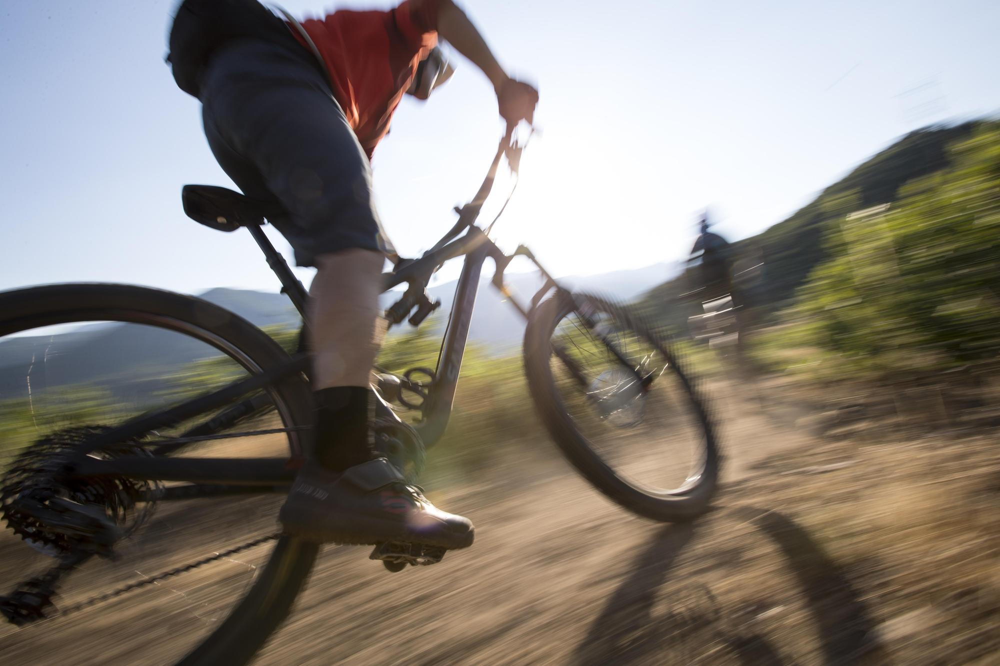
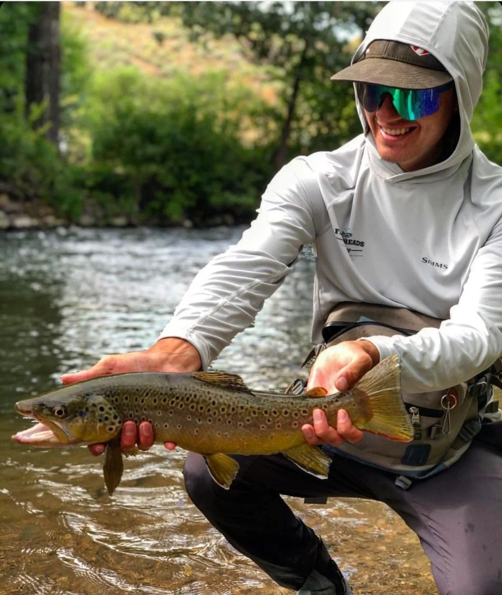

Fig.1 - Heber Valley has some of the best of the skiing in the world
Tucked neatly between the world class skiing of Deer Valley (15 minutes away) in Park City and Robert Redford's iconic Sundance Ski Resort (22 minutes away), is the Heber Valley. Here in the Heber Valley you'll find the perfect recipe to create the ski trip of your dreams. Quick and easy access to world class skiing in Park City and Sundance without the high price, crowded atmosphere.
Mountain Biking

Fig.1 - Some of the best mountian biking in the world
Test the limits of your endurance as you climb the sloping trails on a mountain bike. Feel the exhilarating rush as the wind whips by, while you ride down dirt pathways. Take on one of the many beautiful mountain biking trails that surround Heber Valley, whether you're an expert or just starting out. While the trails may range in difficulty, the stunning views make any journey well worth it. Enjoy a Heber Valley pastime favorite of visitors and locals alike.
Fly Fishing

Fig.1 - Heber Valley has some of the best of the skiing in the world
Make your perfect fishing fantasy a reality and turn your morning of fishing into a whole weekend, as Heber Valley offers the best camping, boating, and picnicking locations. Mix it up and take a hike to find the best overlook of the river from the top of the Wasatch Mountain range.